«
⇧
THAILAND
Thailand is a fascinating place known for its beautiful beaches, delicious food, hospitable people, and
rich culture. Thailand provides travelers from all over the world with a year-round vacation option because of
its warm tropical environment. Bangkok, the bustling capital of Thailand, is a modern city with a unique mix of
old temples, new skyscrapers, and lively street markets. By visiting historical places like the ancient city of
Ayutthaya or the breathtaking temples of Chiang Mai, tourists may learn more about the nation's rich cultural
legacy. Thailand's beaches are well known for their stunning coral reefs, silky white sands, and beautiful, blue
waters. Thailand provides a variety of activities, like trekking through the lush jungle, scuba diving in the
Andaman Sea, and simply lazing on a magnificent beach, whether you're searching for relaxation or adventure.
Thailand is undoubtedly a place that appeals to a wide range of travelers thanks to its distinctive fusion of
culture, history, and natural beauty.
PLACES TO VISIT
1. BANGKOK

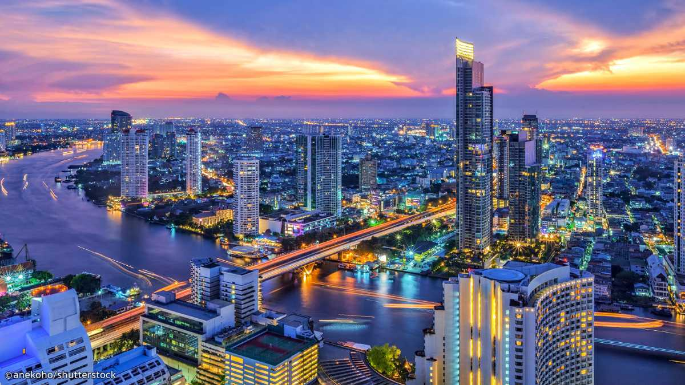
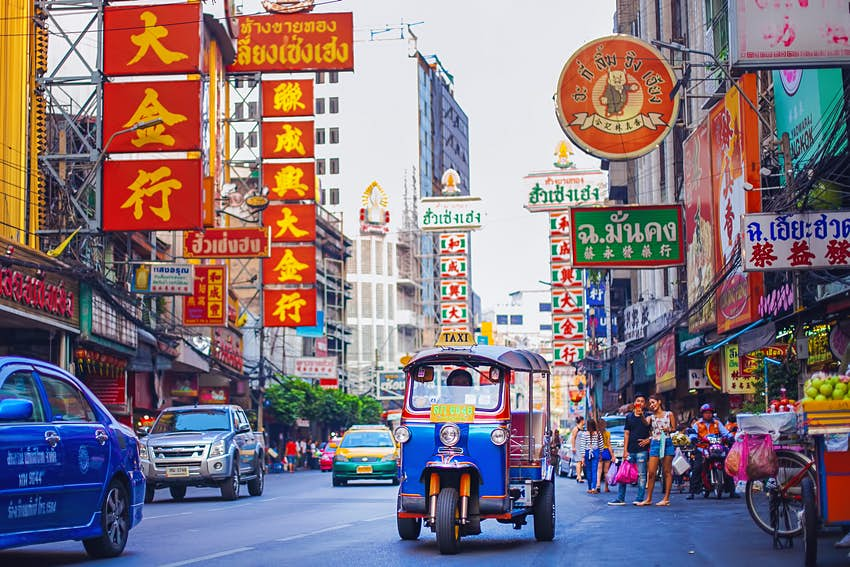

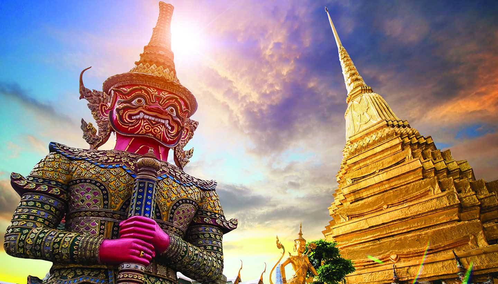
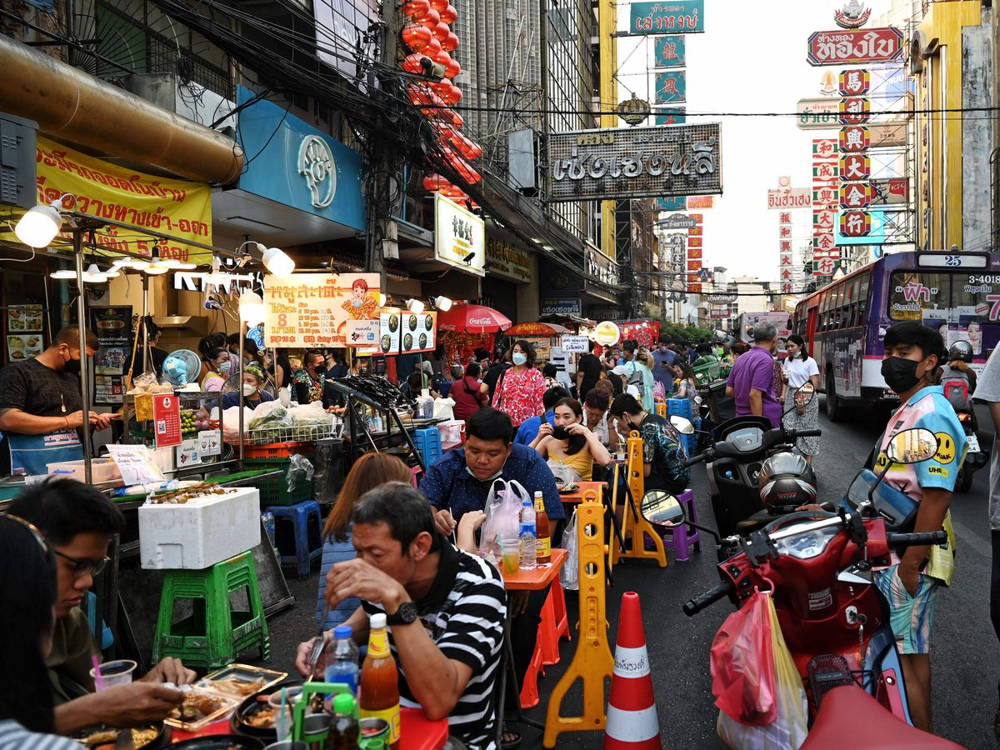
WHY VISIT BANGKOK?
- Beautiful temples with a rich cultural legacy, including Wat Pho and Wat Phra Kaew (Temple of the
Emerald Buddha) (Temple of the Reclining Buddha)
- Street food or upscale restaurants both serve authentic Thai food with a variety of flavors and spices.
- Experiences for shopping that range from traditional marketplaces to luxurious malls and offer a variety
of goods like clothing, electronics, and souvenirs
- A variety of restaurants, clubs, and entertainment places that appeal to all tastes and an exciting
nightlife
- The National Museum and the Bangkok Art and Culture Center are two examples of museums and galleries
that provide insights into Thai history and culture.
2. KOH SAMUI
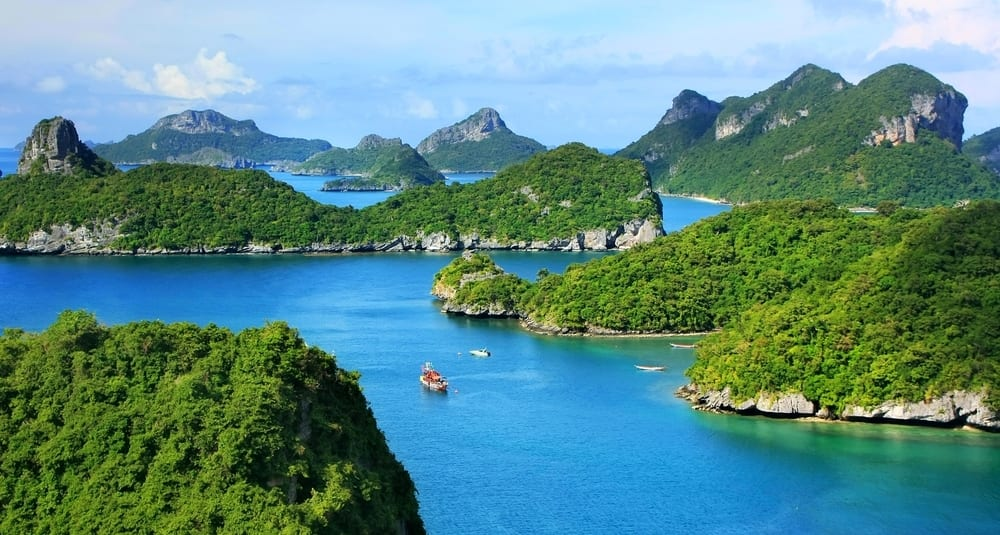
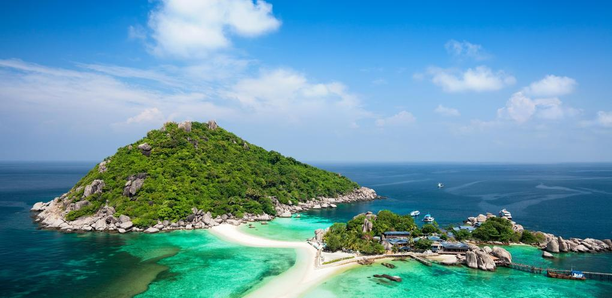
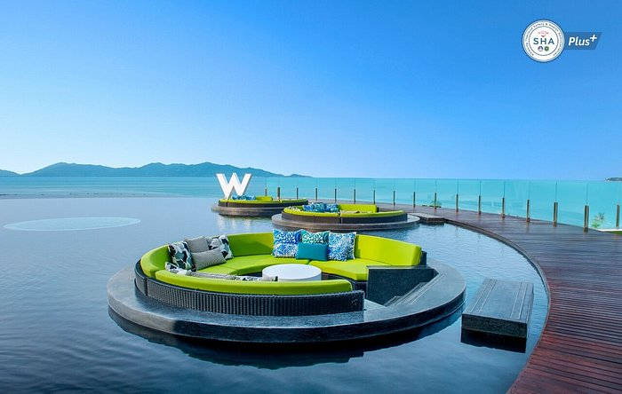
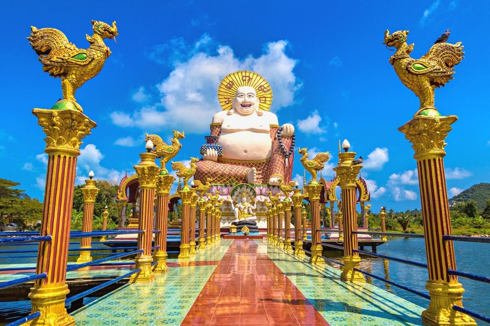
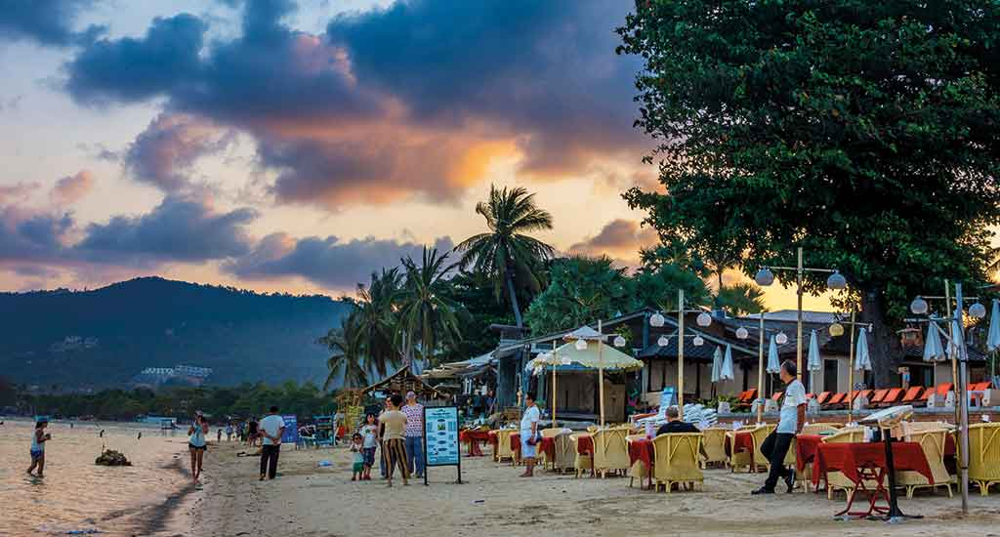
WHY VISIT KOH SAMUI?
- Beautiful beaches including Chaweng Beach, Lamai Beach, and Bophut Beach include silky sand,
crystal-clear waters, and palm trees.
- Beautiful natural landscapes, such as Hin Lad Waterfall and Na Muang Waterfall, as well as coconut
plantations and hiking trails
- Luxurious hotels and villas offering a variety of lodging options and comforts for a relaxed getaway
- Kayaking, scuba diving, and other thrilling water sports that give you the chance to explore the
island's marine life and undersea world
3. CHIANG MAI
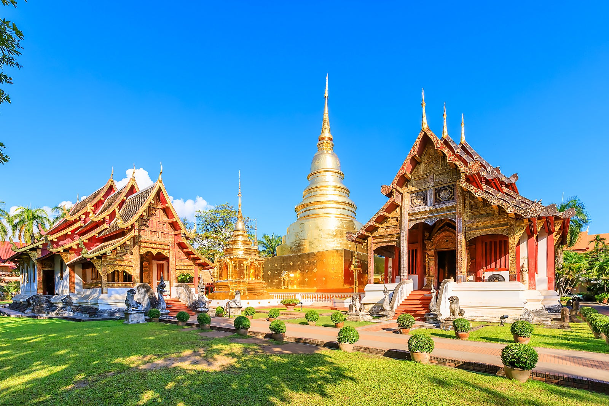
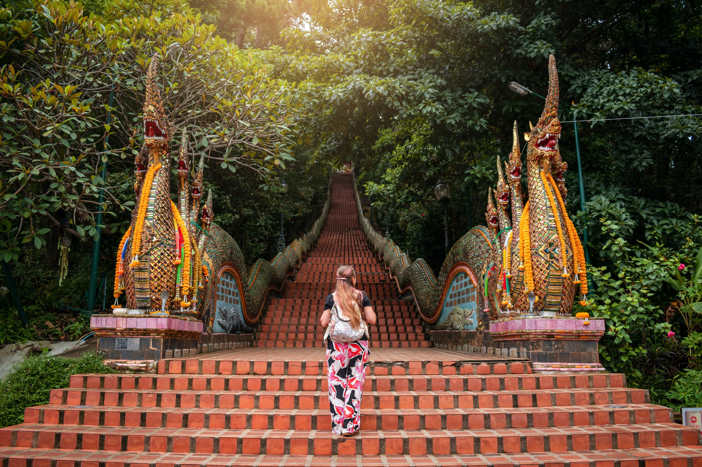
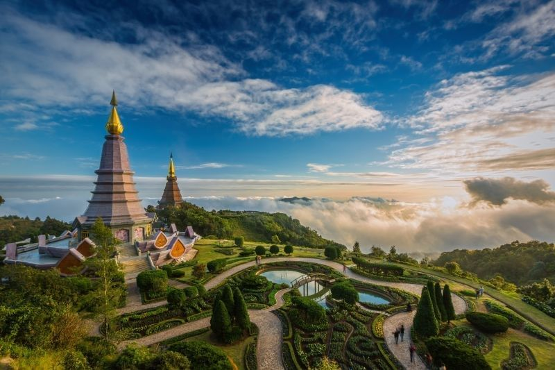
WHY VISIT CHIANG MAI?
- Exciting outdoor pursuits like zip-lining, trekking, and visiting elephant sanctuaries provide you the
ability to ethically connect with elephants while also exploring the wild.
- Mountains, waterfalls, and national parks including Doi Inthanon National Park and Mae Sa Waterfall are
all part of the breathtaking natural beauty.
- Rich cultural history including historic temples that provide insight into Thai Buddhism and
architecture, including Wat Phra That Doi Suthep, Wat Chedi Luang, and Wat Phra Singh
- The opportunity to explore Thai traditions and customs is provided by festivals and events held
throughout the year, such as the well-known Yi Peng Lantern Festival and the Songkran water festival.